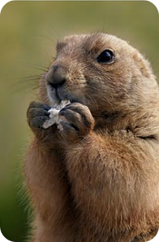
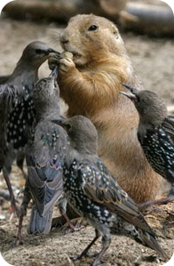
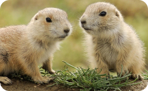
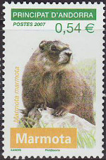

MARMOTA |
|
|---|---|
Nombre científico: |
MARMOTA MARMOTA |
Categoría: |
MAMÍFERO |
Dieta: |
HERBÍVORO |
Reproducción: |
VIVÍPARO |
Tamaño: |
50-60 cm |
Masa: |
6-8 Kg |
Longevidad media: |
5 AÑOS |
Hábitat |
TERRESTRE |
La marmota alpina es el roedor más grande de Europa y una de las dos especies de marmotas que se encuentran en este continente. Está emparentada con las ardillas, con las que comparten familia, pero su aspecto y costumbres difiere enormemente de las de éstas.
Está difundida por los montes Tatras, Alpes y Pirineos (donde fue reintroducida en 1948), entre los 800 y los 3.200 metros de altitud. Aunque ésta es la especie que comúnmente se conoce como marmota, existen al menos 14 especies más, difundidas por las zonas montañosas del hemisferio norte clasificadas dentro del género Marmota y que incluyen esta palabra en su nombre común.
| Anatomia | |
|---|---|
| La marmota de los Alpes mide entre 50 y 58 centímetros de largo, a los que hay que añadir entre 13 y 16 centímetros de cola, bastante corta en comparación con otros roedores. El peso máximo registrado es de 8 kilos. La cabeza y cuerpo son gruesos, con patas cortas y orejas pequeñas como adaptación al frío del hábitat en que viven. El pelaje es pardo grisáceo en el dorso, con el vientre amarillento y el extremo de la cola de color negro. La subespecie de los Montes Tatra se caracteriza por su menor tamaño y su pelaje de color más claro. |
| Alimentación | ||
|---|---|---|
| Las marmotas alpinas se alimentan de plantas herbáceas, semillas y pequeños invertebrados (insectos, arañas, gusanos). Prefieren los brotes jóvenes y mantienen sus alimentos con sus patas delanteras cuando comen. Las marmotas de los Alpes salen de sus madrigueras para alimentarse, sobre todo por la mañana y por la tarde. Son sensibles al calor, por lo que a veces no se alimentan durante los días especialmente calurosos. Cuando las condiciones meteorológicas son las adecuadas, consumen grandes cantidades de alimentos con el fin de construir una capa de grasa que les permite sobrevivir durante su larga hibernación |  |  |
| Comportamiento |
|---|
|
La marmota es de hábitos diurnos y pasa la mayor parte del día buscando comida o sentada en su característica posición. Se relaciona con facilidad con otros animales de su especie, estén emparentados entre sí o no, hasta el punto de formar colonias de centenares de ejemplares que tienen sus madrigueras en la misma zona. Estas madrigueras acogen a varios individuos, y pueden llegar a tener varios metros de profundidad. Así, las marmotas quedan aisladas por completo del frío que se apodera de la superficie durante el invierno, que pasan en estado de hibernación. La temperatura corporal se reduce entonces a entre 4'6 y 7'6 ºC, la respiración a dos o tres veces por minuto y las pulsaciones a diez por minuto. Con el fin de acumular reservas para el invierno, las marmotas devoran grandes cantidades de hierbas (raíces incluidas) y desarrollan una gruesa capa de grasa subcutánea durante el otoño.
Otra característica de las marmotas jóvenes es el hecho de que se "besan". Este comportamiento es habitual entre marmotas de una misma familia para reconocer el olor mediante caricias nasales. |
| Reproducción | |
|---|---|
|  | Las marmotas maduran y pueden reproducirse ya en su primer año de vida, aunque lo más normal es que esperen al segundo para tener su primera camada. La época de celo se produce entre marzo y abril, justo al término de la hibernación. Durante el periodo de gestación, que dura una treintena de días, macho y hembra permanecen juntos, abandonando el primero la madriguera cuando se produce el parto. Éste consta de dos a seis crías que nacen ciegas, desnudas e incapaces de valerse por sí mismas. Crecen deprisa y alrededor del mes y medio de nacer ya abandonan el hogar materno. |
| Distribución | |
|---|---|
| El registro fósil demuestra que las marmotas ampliaron enormemente su extensión durante los periodos en que las glaciaciones se abatían sobre el continente, desde Inglaterra y la Meseta Central castellana hasta Rusia. Ya entonces eran un aperitivo ocasional para los hombres primitivos, aunque su reducción a los montes Tatras y los Alpes debe adjudicarse exclusivamente a los cambios climáticos. No obstante, en tiempos recientes las marmotas fueron objeto de una caza exhaustiva debido a las supuestas propiedades medicinales de su grasa, que las llevó casi al borde de la extinción. En el siglo XIX se comenzaron a tomar medidas para evitar su desaparición, como la prohibición de la caza de marmotas en los Tatras en 1869. Durante el siglo XX se han llevado a cabo varias repoblaciones en Francia con éxito, hasta el punto de que las marmotas son ahora una especie en expansión en los Pirineos francés, español y andorrano. |  |